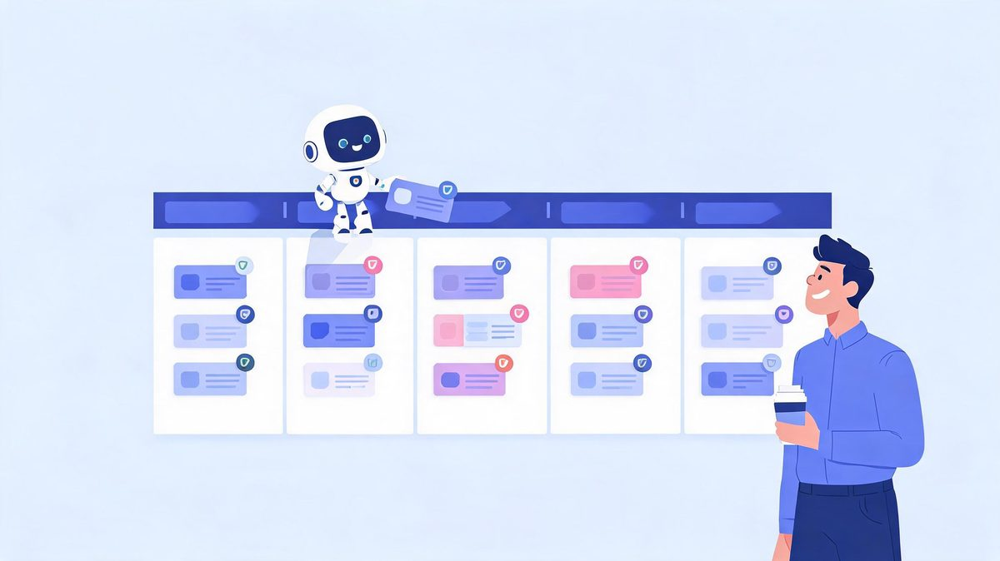
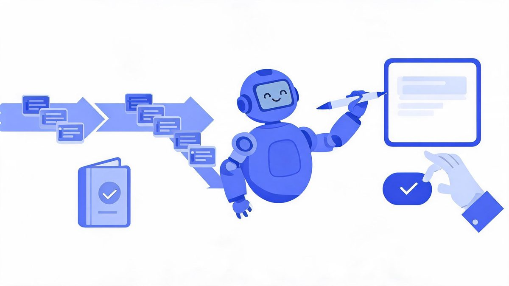
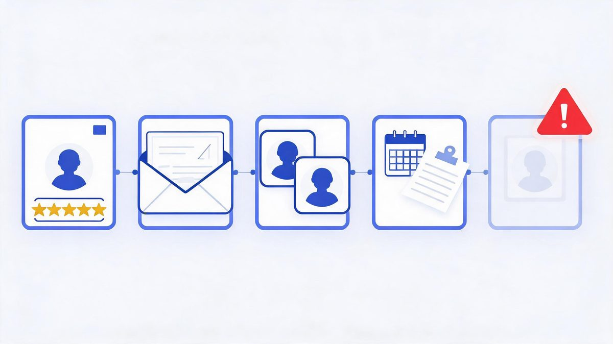
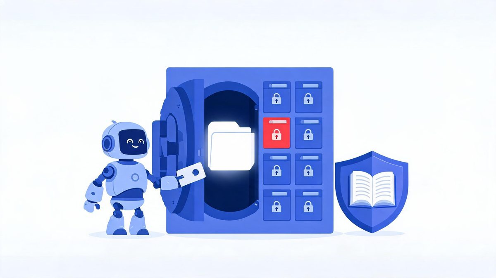
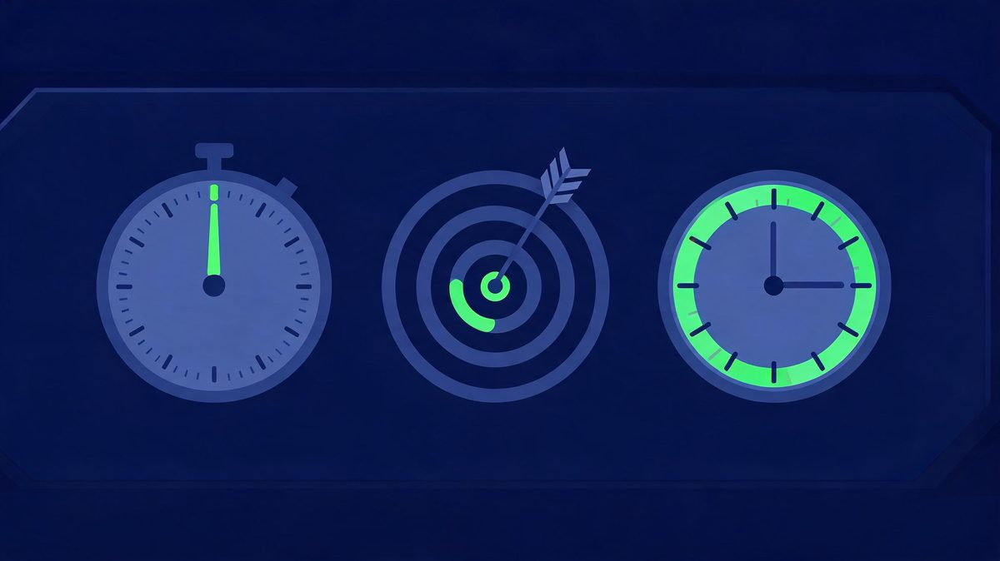

AI Agent Integration With CRM: Automate Sales Workflows

Sales reps spend more time updating the CRM than using it. An integrated AI agent flips that equation — qualifying inbound leads, drafting follow-ups, and logging every touch automatically, while your team sells. The catch: it only works if the permissions are designed before the demo runs.
Quick answer: AI agent integration with CRM connects an agent to Salesforce, HubSpot, or Dynamics through scoped OAuth access: it reads leads and deals, scores them against your criteria, updates stages, and drafts follow-ups — with human approval before anything customer-facing sends. Teams reclaim 5-7 hours per rep per week on CRM admin alone.
Key takeaway: CRM is the best first integration for most businesses because the workflow is countable — leads in, qualified leads out, hours saved per rep. The design order matters: measure the baseline, grant read access, add write access to one field, put approval on customer-facing sends, and expand only when the audit log earns it.
TL;DR:
- Five tasks automate well: lead scoring, follow-up drafting, data hygiene, meeting summaries, churn-risk flags.
- The permission pattern is settled: dedicated OAuth credential, field-level writes, no delete rights, audit log on everything.
- CRM choice matters less than data quality — Salesforce, HubSpot, Dynamics, and Zoho all ship agent-ready APIs in 2026.
- Pilot timeline: 2-6 weeks for one workflow, with the baseline measured before the agent arrives.
Table of Contents
What Is AI Agent Integration With CRM?
AI agent integration with CRM is the process of connecting an AI agent to your customer relationship management system through scoped APIs, so it can read leads and deals, reason about them, and write updates — with human approval on customer-facing actions. The definition contains the whole design problem: read widely, write narrowly, approve anything expensive.

How does AI agent integration with CRM work?
How does AI agent integration with CRM work? AI agent integration with CRM is the connection of an AI agent to the CRM system through scoped OAuth APIs: read access pulls leads and deals, reasoning scores the leads, and write access updates stages with approval on customer-facing sends.
According to Salesforce and Microsoft implementation guides, each layer is scoped separately, so an agent reading every contact still writes one field at a time (Sources: Salesforce, Microsoft, 2026). IDC research sets the stakes: 88% of agent pilots never reach production, and only 11% of adopters run agents in production (Sources: IDC, Fortune, 2026).
For example, an inbound lead arrives at 2 AM: an agent using Salesforce scores the lead, creates the record, drafts a personalized follow-up, and queues the draft for rep approval by morning. We found successful teams write the permission matrix before connecting anything.
First, list what the agent must read. Second, list the one field to write. Finally, put everything else behind approval.
5 CRM Tasks Agents Automate Today
These five are running in production CRMs right now — not demos, documented deployments with measurable baselines.

Which CRM tasks can AI agents automate?
Which CRM tasks can AI agents automate? Five CRM tasks dominate 2026 agent deployments: lead qualification, follow-up drafting with approval queues, data hygiene, meeting summaries written to deal records, and churn-risk flags.
According to 2026 CRM platform comparisons, agents need API write access, webhook support, and clean data pipelines to run these tasks reliably (Sources: Teamgate, 2026). The economics justify the build: Gartner forecasts $2.595 trillion in AI spending for 2026, and Business.com finds workers saving 5.6 hours weekly with AI tools, while IDC warns 88% of pilots fail without this measurement base (Sources: Gartner, Business.com, IDC, 2026).
For example, an agent using HubSpot enriches a new contact, scores the lead, and routes high scores to a rep within minutes of form submission. We found churn flags deliver the quietest ROI because saved accounts never appear in dashboards.
First, automate lead scoring as the countable, low-risk start. Second, add data hygiene once scoring accuracy holds. Finally, place follow-up drafting under approval until quality stabilizes.
Permissions: What the Agent May Touch
This section is the whole project. Get permissions right and the agent becomes a teammate; get them wrong and it becomes IDC's next failure statistic.
What permissions does a CRM agent need?
What permissions does a CRM agent need? A CRM agent needs three permission scopes, ordered deliberately: read access to the workflow objects, write access to specific fields only, and zero delete rights, with schema validation and an audit log wrapping every write.
According to Salesforce and Microsoft security documentation, the 2026 standard adds two controls: validation before every write and complete change logging (Sources: Salesforce, Microsoft, 2026). The stakes are financial: Gartner forecasts $2.595 trillion in AI spending for 2026, while IDC finds 88% of pilots failing on governance gaps and 40% of agentic projects canceled (Sources: Gartner, IDC, 2026).
For example, an agent using Salesforce may update the next-follow-up date on any deal but touches the amount field only through a human approval queue. We found permission design completed in week one eliminates the security-review delays that kill pilots in week six.
First, write the permission matrix before integration code. Second, enforce the matrix in credential scopes, not prompts. Finally, review the audit log weekly.
The non-negotiable: a CRM agent never holds delete rights and never holds admin credentials. IDC attributes 88% of pilot failures to integration and security design — and loose CRM permissions are the most common self-inflicted wound. The badge is scoped, or the badge does not ship.

Salesforce, HubSpot, or Zoho: Does It Matter?
Less than vendors claim. Every major CRM ships agent-ready APIs in 2026 — the real question is which one your team already runs.
| CRM | Agent Entry Point | Standout Trait |
|---|---|---|
| Salesforce | Agentforce + APIs | Deepest enterprise governance tooling |
| HubSpot | Breeze agents + API | Fastest setup for mid-market teams |
| Microsoft Dynamics | Copilot Studio connection | Inherits M365 identity and compliance |
| Zoho | Zia + APIs | Cost-effective for smaller pipelines |
| Pipedrive | API + webhook pattern | Simple pipelines, clean agent writes |
According to 2026 CRM platform comparisons, agents need three things from the underlying CRM: API write access, webhook support, and clean data pipelines (Sources: Teamgate, 2026). Salesforce, HubSpot, Dynamics, and Zoho all qualify — which is why the decision usually follows your existing stack. For example, a company already running Microsoft 365 gets identity and compliance inheritance through Dynamics at no extra architectural cost. We found migration is almost never worth it for agent access alone. First, check whether your current CRM exposes the fields the agent needs. Second, test the webhook flow with a sandbox. Finally, price the platform's agent features against a horizontal tool like Zapier before committing.
The 3 CRM Metrics That Prove It Works
How do you measure CRM agent performance?
How do you measure CRM agent performance? CRM agent performance is a measurement of three metrics against a pre-launch baseline: response speed from lead arrival to first meaningful contact, qualification accuracy of agent-scored leads that convert, and admin hours saved per rep per week.
According to Business.com's 2026 research, workers save 5.6 hours weekly with AI tools and owners save 6.8 hours on administration, and 88% of organizations already use AI in at least one function (Sources: Business.com, McKinsey, 2026). For example, a team using HubSpot measured two weeks before launch: reps spent 9 hours weekly on CRM admin, and after agent integration with approval queues, admin time dropped to 3 hours weekly.
We found teams that skip the baseline cannot prove any of these gains, and unproven projects match Gartner's 40% cancellation pattern (Sources: Gartner, 2026).
First, instrument the baseline before the agent exists. Second, review the three metrics weekly. Finally, expand scope only when the numbers hold for a month. For the wider business case — use cases across seven functions, cost expectations, and risk framing — see AI agent integration for business.

FAQs
How does AI agent integration with CRM work?
Through three layers: OAuth authentication grants scoped access, read permissions pull leads and deals, and write permissions update stages and log activities. A human approval step gates customer-facing actions, and every agent change lands in an audit log.
Which CRM tasks can AI agents automate?
Five tasks dominate 2026 deployments: lead qualification, follow-up drafting with approval, data hygiene, meeting summaries written to deal records, and churn-risk flags. Lead scoring automates first because it is countable and low-risk.
What permissions does a CRM agent need?
Read access to workflow objects, write access to specific fields only, and zero delete rights — plus schema validation before writes and a complete audit log. One dedicated OAuth credential per agent, rotated on a schedule.
Can an AI agent hurt your CRM data?
Yes, if permissions are loose — which is why field-level write scopes, validation, approval queues, and rollback plans are standard. IDC attributes 88% of pilot failures to integration and security design, not model quality.
Which CRMs work best with AI agents?
CRMs with API write access, webhook support, and clean pipelines: Salesforce (Agentforce), HubSpot (Breeze), Microsoft Dynamics (Copilot Studio), and Zoho all qualify in 2026. The right choice follows the CRM your team already runs.
How long does CRM agent integration take?
One workflow — typically lead qualification — takes two to six weeks including permissions and testing. Broader rollouts with governance run three to six months. Measure the baseline first, because unmeasured projects match Gartner's 40% cancellation pattern.
The Bottom Line
AI agent integration with CRM is the highest-confidence first integration for most businesses: the workflow is countable, the APIs are mature, and the payoff — 5 to 7 admin hours returned per rep every week — shows up in weeks, not years. The design rules are settled: scoped OAuth credentials, field-level writes, approval on customer-facing sends, and an audit log that earns every expansion. Start with lead qualification on the CRM you already run, measure the baseline for two weeks before the agent arrives, and let the numbers argue for the next workflow. The AI agent integration pillar guide covers the full implementation framework, the agents vs chatbots comparison settles whether you need an agent at all, and workflow automation explains the monitoring ritual that keeps it healthy. Your reps have better things to do — and now the CRM agrees.
Sources
- Salesforce and Microsoft implementation guides — OAuth scoping and agent permission patterns, 2026
- Teamgate — CRM platform comparison for AI agents: API write access, webhooks, pipelines, 2026
- IDC — 88% of AI agent pilots never reach production, via Institute PM, 2026
- Business.com and JPMorgan Chase Institute — AI time-savings research (5.6h/6.8h weekly), 2026
- Gartner — 40%+ agentic AI project cancellations; $2.595T spending forecast, 2026
- HubSpot Breeze, Salesforce Agentforce, Zoho Zia platform documentation, 2026